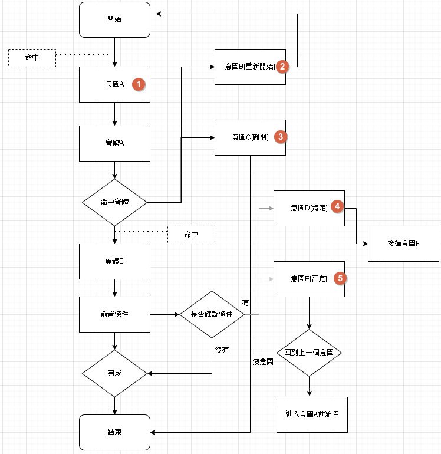
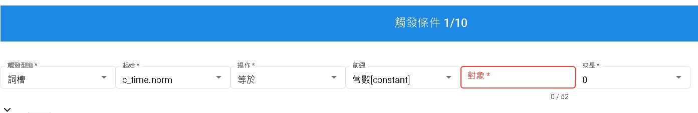
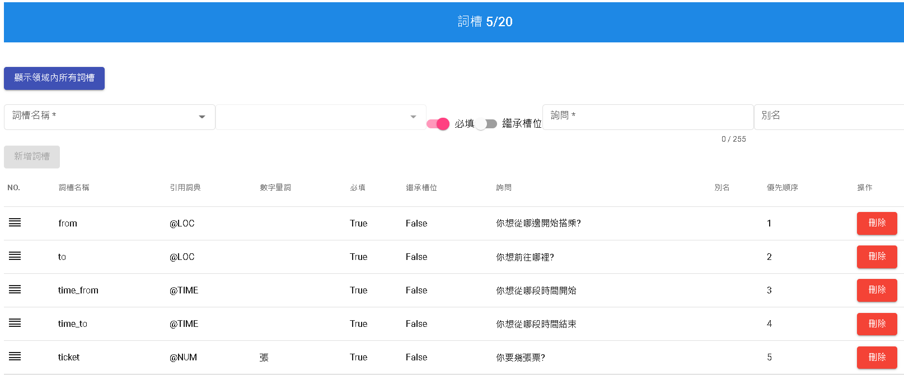

意圖
意圖分為六大區塊分別是觸發條件、詞槽、說法、打斷意圖、前置條件以及完成。
意圖型態
無
- 一般意圖，單純做找尋意圖，或是填補實體的意圖型態。
重新開始
- 當命中重新開始意圖，將會重新開始當前意圖。
離開
- 當命中離開意圖，將會關閉整個意圖行為。
肯定
- 當前置節點，動作為"確認"時，需要肯定意圖才會跳去下一個階段。
否定
- 當前置節點，動作為"確認"時，否定意圖會取消當前狀況。

觸發條件
觸發條件，需要填寫的格子分別為觸發型態、起始、操作、或是以及對象。
- 觸發型態:目前僅支援"詞槽"
- 起始:可以選擇詞槽以及正規化
- 操作:根據詞槽會變化，為已填充、未填充、等於、不等於、大於、小於等。
- 對象:為常數
- 或是:在同一個組別是AND，不同組之間為OR

前綴
- constant:輸入一律當字串。
- context:根據上下文參數做賦值，例如:資源回傳值或是非業務資源使用參數注入。
- entities:實體
- dtFormat:日期表現方法
- config:全域參數位於領域管理，為固定變數。
日期表現方法
用於比對日期所使用的方法
例如: ('=2022','=10','=17','=15','=54','') 代表是2022年10月17日15點54分
- 第一格，代表年份有=+-三種符號，=為指定該年份、+為當前年加上後面數字年份，-為當前年減去後面數字年份，假設今年2022年，'-1'=>2021年，'+3'=>2025年
- 第二格，代表月份有=+-三種符號，=為指定該月份、+為當前月加上後面數字月份，-為當前月減去後面數字月份，假設當前月四月，'-1'=>三月，'+3'=>七月
- ... 以此類推
- 第六格，代表星期幾僅支援=，=代表選擇當前星期的日期，1為星期一、2為星期二、...、7為星期日，當2022/10/12為星期三，'=1'=>2022/10/10, '=4'=>2022/10/13
日期表現用法
- 可以查找當前星期是否為工作日或休假日。
- 可以比對特定日期以及時間
- 可以只比對日期或時間
操作
- 字串:等於、不等於、已填充、未填充
- 數字以時間:等於、不等於、已填充、未填充、、大於、小於
詞槽
詞槽分為詞槽名稱、必填、繼承詞槽、詢問
- 詞槽名稱:從"顯示領域內所有詞槽"按鈕做新增。
- 引用辭典:根據引用辭典為標準。
- 數字量詞:非當前詞槽問法，需要符合量詞定義才會擷取詞槽。
- 必填:該詞槽是否為必要，若為必要，一定會進行詢問，若非必要，則詢問時有對應著則填補該詞槽。
- 繼承詞槽:在不同意圖轉換，如果不同意圖有相同詞槽名稱，相會進行覆蓋。
- 詢問:當用戶問話未完成所有實體填寫時會詢問，如果必填為否，將不會詢問。
- 別名:舉例取得實體為地點，但是有兩個詞槽都是引用地點時，別名就要特別取用，出發時間以及抵達時間做分別。

說法
用於訓練機器人，模擬使用者詢問的問題。
打斷意圖
當話題屬於沒命中詞槽時，會檢查在打斷意圖中的意圖是否命中，若命中則轉跳去其他意圖。
前置條件
前置條件，需要填寫的格子分別為觸發型態、起始、操作、條件群組以及對象，同觸發條件。
並每個群組中有節點動作。
節點動作分為確認以及跳轉，確認跟打斷意圖相似，但意圖中須包含肯定以及否定，而跳轉則是直接跳入指定意圖。
完成
完成，需要填寫的格子分別為觸發型態、起始、操作以及對象，同觸發條件。
呼叫資源:
- 參數:賦值根據提示填寫。
- 回傳值:供"達成條件後回答"使用參數。
其他:
- 調用失敗回答區塊:當HTTP狀態不為200或諭時或其他錯誤產生的回答。
- 回覆啟動:是否啟用"達成條件回答區塊"
- 達成條件回答區塊:當滿足"觸發條件"們且沒有錯誤時所回答的對話。
- 依賴意圖:當完成後會跳轉到下一個意圖。
達成條件後回答
可直接輸入"$"會進行提示。語法同先前的模板輸出一樣。